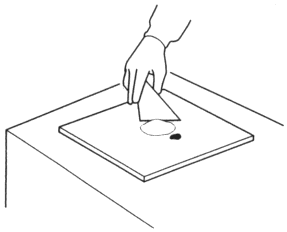
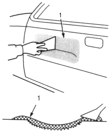
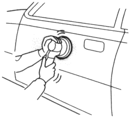
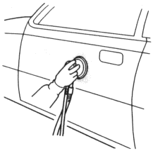

- Filling/drying
Small cracks or pinholes in the sheet metal should be repaired with a body filler and sanded flat and smooth.
|
- Mix the body filler and hardener quickly.

- Apply the body filler in several thin coats, without air bubbles.
- Do not try to cover the surface with one heavy coat.
- Apply the body filler over the damaged area with a putty knife using light pressure.

- Body Filler
- After applying the body filler, allow 5~6 minutes of normal drying time, then force dry it with infrared lamps or other industrial dryer at 50°C (122°F)~60°C (140°F).
NOTE: Follow the body filler manufacturer's instructions for drying time.
- Polishing
When the body filler is dry a white mark appears when the surface is scratched with your finger nail.
- Thoroughly sand the body filler surface.
| Use the double action sander and #80~#120 disc paper. |

- Sand the surface evenly, particularly the area that was filled.
| Use the flexible block and #120~#180 sandpaper. |
